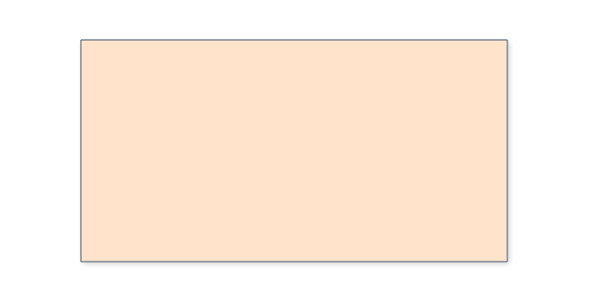
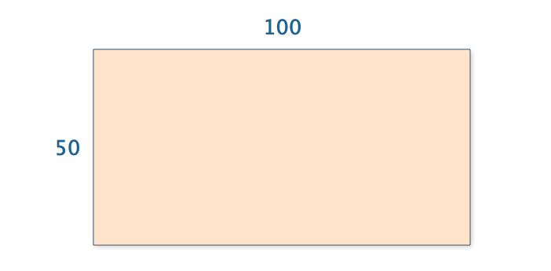
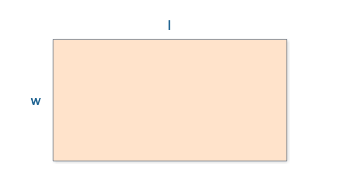
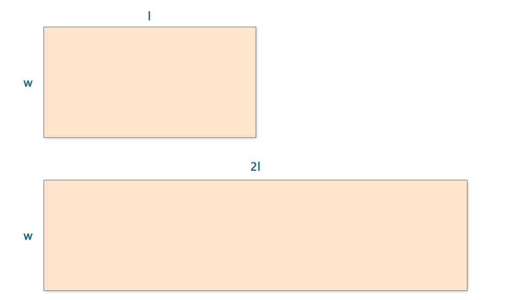
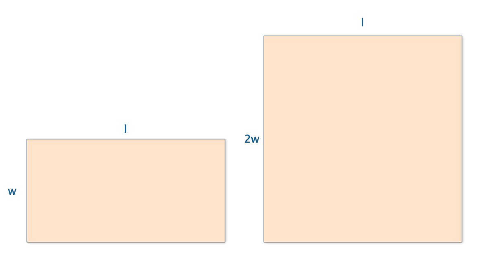
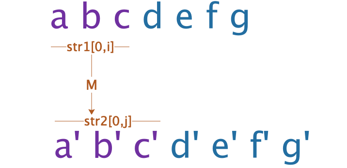
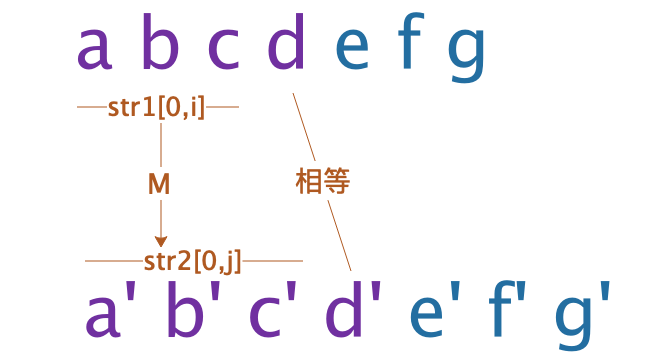
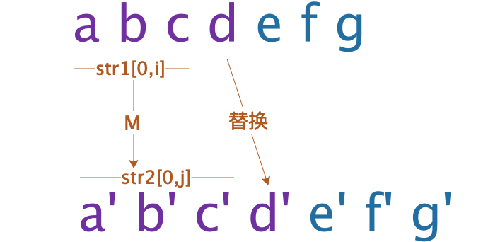
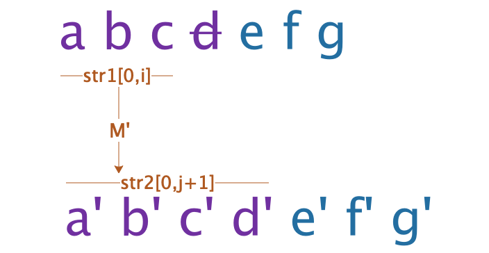
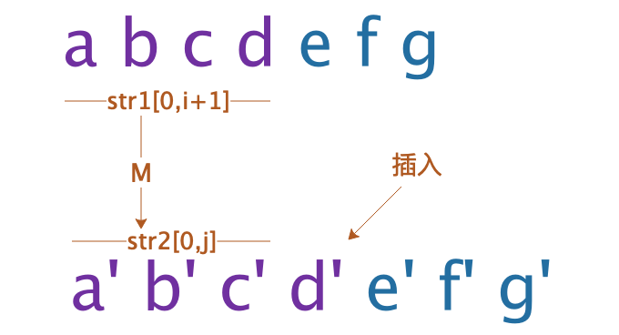

A Programmer's Mathematical Thinking: Deriving Rectangle Area
Most people learn the area of a rectangle in elementary school: area equals length times width. You memorize the formula, you use it on tests, you move on. But have you ever stopped to ask why? Why is the area of a rectangle equal to length times width? Where does this formula come from? Who decided it was true?
This question might seem trivial — after all, it's just a rectangle — but the process of answering it reveals something profound about mathematical thinking. And that same process, it turns out, is exactly what programmers do every day when they solve algorithmic problems.
In this article, I'll derive the area of a rectangle from first principles, then show how the same thinking pattern applies to one of the classic programming problems: string edit distance.
Part 1: Deriving Rectangle Area from Scratch
The Farmer's Curiosity
Imagine a farmer who owns a rectangular plot of land. He knows it's rectangular. He can measure the length and the width. But he wants to know the area — the total amount of land he has. How would he figure that out?
He doesn't know the formula. Nobody has told him "area equals length times width." All he has is his ability to measure lengths and his intuition about space. How does he get from "I know the length and width" to "I know the area"?


Let's walk through his thought process step by step.
Step 1: Symbolize the Unknown

The first step is to give the unknown a name. The farmer doesn't know the area, so let's call it S. Now we have a symbol that represents what we're trying to find. This might seem like a small thing, but it's crucial. By giving the unknown a name, we can talk about it, reason about it, and manipulate it.
So: let S be the area of the rectangle.
Step 2: Parameterize
Next, we identify what we do know. The farmer can measure the length and the width. Let's call the length l and the width w. Now we can express the area as a function of these known quantities:
S = S(l, w)
This says: the area S depends on the length l and the width w. We don't know how it depends on them yet, but we know that it does. This is progress. We've gone from "I don't know the area" to "the area is some function of the length and width."
Step 3: Find Relationships Through Experimentation
Now the farmer does some experiments. He starts with a rectangle of length l and width w, and he measures its area S(l, w).
Experiment 1: Double the length.

He takes a rectangle of length l and width w. Then he puts two of them side by side to make a rectangle of length 2l and width w. Intuitively, the new rectangle has twice as much land as the old one. So:
S(2l, w) = 2 * S(l, w)
Experiment 2: Double the width.

Similarly, he puts two rectangles one on top of the other to make a rectangle of length l and width 2w. Again, the new rectangle has twice as much land:
S(l, 2w) = 2 * S(l, w)
These are powerful observations. They tell us how the area changes when we scale one dimension.
Step 4: Generalize
The farmer notices a pattern. If doubling the length doubles the area, then tripling the length should triple the area. And multiplying the length by any number # should multiply the area by the same number #:
S(#l, w) = # * S(l, w)
This is a generalization from specific cases (doubling) to a general principle (any scaling). It's an inductive leap, and it requires some faith. But it's a faith grounded in observation and intuition. If doubling works, and tripling works, and quadrupling works, then it's reasonable to believe that any scaling works.
Similarly, by the same reasoning applied to the width:
S(l, #w) = # * S(l, w)
Step 5: Derive the Formula
Now we have everything we need. Let's apply the generalization to derive the formula.
Start with S(l, w). We can rewrite l as l * 1, so:
S(l, w) = S(l * 1, w) = l * S(1, w)
Here we used the rule S(#l, w) = # * S(l, w) with # = l and the base length being 1.
Now apply the same rule to the width. We can rewrite w as w * 1:
S(1, w) = S(1, w * 1) = w * S(1, 1)
Substituting back:
S(l, w) = l * S(1, w) = l * w * S(1, 1)
So the area of any rectangle is l * w times the area of a 1x1 square. Now we just need to figure out what S(1, 1) is.
Step 6: Define the Unit
What is S(1, 1)? It's the area of a square with side length 1. This is our unit of area. By definition, we define the area of a 1x1 square to be 1:
S(1, 1) = 1
This is not something we prove — it's something we define. We choose the 1x1 square as our unit of area, just as we choose the meter as our unit of length. It's a convention.
Substituting this into our formula:
S(l, w) = l * w * 1 = l * w
And there it is: the area of a rectangle is length times width. Not because someone handed it down from on high, but because we derived it from first principles through observation, experimentation, generalization, and definition.
Part 2: What Just Happened?
Math Is Not Divine Revelation
The process we just went through is, I believe, the essence of mathematical thinking. And it's not what most people think it is.
Many people imagine that mathematics is a collection of eternal truths, discovered by geniuses through pure intuition or divine inspiration. Euclid just saw the axioms of geometry. Newton just knew the laws of calculus. Gauss just perceived the patterns in number theory.
But that's not how it works. Mathematics is built on experience, observation, experimentation, symbolization, generalization, and reasoning. It's a human activity, grounded in the physical world, refined through rigorous logic.
Let's trace the steps we took:
- Experience: We started with a concrete, physical situation — a farmer with a rectangular plot of land.
- Observation: We observed what happens when we double the length or the width — the area doubles.
- Experimentation: We tested specific cases to build confidence in the pattern.
- Symbolization: We gave names to the unknown (S) and the known (l, w).
- Parameterization: We expressed the unknown as a function of the known: S(l, w).
- Generalization: We generalized from specific cases (doubling) to a general principle (any scaling).
- Reasoning: We used logical deduction to derive the formula from the general principle.
- Definition: We defined the unit (S(1,1) = 1) to complete the derivation.
This is not divine revelation. This is human thinking, systematic and rigorous, but fundamentally grounded in observation and experience.
Part 3: How Does This Relate to Programmers?
You might be wondering: this is nice, but what does it have to do with programming? The answer is: everything. The same thinking pattern — observe, symbolize, parameterize, generalize, reason — is exactly what programmers use to solve algorithmic problems.
Let me show you with a concrete example.
The String Edit Distance Problem
The edit distance (or Levenshtein distance) between two strings is the minimum number of operations needed to transform one string into the other. The allowed operations are:
- Replace a character with another character
- Delete a character
- Insert a character
For example, the edit distance between "abcd" and "acdb" is 3:
- Replace 'b' with 'c': "abcd" -> "accd"
- Replace 'c' with 'd': "accd" -> "acdd"
- Replace 'd' with 'b': "acdd" -> "acdb"
How do we solve this problem? Let's apply the same thinking pattern we used for the rectangle area.
Step 1: Start with Concrete Examples
Before we try to solve the general problem, let's look at specific examples. What's the edit distance between "abcd" and "acdb"?
We can try various sequences of operations:
- "abcd" -> "accd" -> "acdd" -> "acdb" (3 replacements)
- "abcd" -> "acd" -> "acdb" (1 delete + 1 insert = 2 operations)
Wait, the second one is only 2 operations! Let me verify:
- "abcd" -> delete 'b' -> "acd"
- "acd" -> insert 'b' at the end -> "acdb"
Yes, that's 2 operations. So the edit distance is at most 2. Can we do it in 1? No, because the strings are different in at least 2 positions. So the edit distance is 2.
By working through concrete examples, we build intuition for the problem. We see what operations are useful, and we start to notice patterns.
Step 2: Identify the Operations
From the examples, we identify the allowed operations:
- No-op: The current characters match, so we don't need to do anything.
- Replace: The current characters don't match, so we replace one with the other (cost: 1).
- Delete: We delete a character from the first string (cost: 1).
- Insert: We insert a character into the first string (cost: 1).
Step 3: Parameterize
Now we parameterize the problem. Instead of thinking about specific strings like "abcd" and "acdb," we think about prefixes of the strings. Let:
shortestEditDist(str1, str2, i, j)
be the edit distance between the first i characters of str1 and the first j characters of str2.
This is the key insight. By parameterizing, we've turned a single problem (edit distance between two specific strings) into a family of problems (edit distance between all possible prefixes). And the family is easier to solve than the individual problem, because the subproblems are related to each other.

Step 4: Symbolize the Unknown and Find Relationships
Now we ask: what is the relationship between shortestEditDist(str1, str2, i, j) and smaller subproblems?
Consider the last characters of the prefixes: str1[i-1] and str2[j-1]. There are two cases:
Case 1: The characters match (str1[i-1] == str2[j-1]).
If the last characters match, we don't need to do anything with them. The edit distance is the same as the edit distance of the shorter prefixes:
shortestEditDist(str1, str2, i, j) = shortestEditDist(str1, str2, i-1, j-1)

Case 2: The characters don't match (str1[i-1] != str2[j-1]).
If the last characters don't match, we need to do something. We have three options, and we take the one that gives the minimum edit distance:
- Replace: Replace str1[i-1] with str2[j-1]. The cost is 1 + shortestEditDist(str1, str2, i-1, j-1).

- Delete: Delete str1[i-1]. The cost is 1 + shortestEditDist(str1, str2, i-1, j).

- Insert: Insert str2[j-1] into str1. The cost is 1 + shortestEditDist(str1, str2, i, j-1).

So:
shortestEditDist(str1, str2, i, j) = 1 + min(
shortestEditDist(str1, str2, i-1, j-1), // replace
shortestEditDist(str1, str2, i-1, j), // delete
shortestEditDist(str1, str2, i, j-1) // insert
)
This is the recurrence relation. It expresses the solution to a problem in terms of solutions to smaller problems. It's the same kind of relationship we found for the rectangle area: a general principle that connects different instances of the problem.
Step 5: Define the Base Cases
Every recursive definition needs base cases. What is the edit distance when one of the prefixes is empty?
- shortestEditDist(str1, str2, 0, j) = j — to transform an empty string into a string of length j, we need j insertions.
- shortestEditDist(str1, str2, i, 0) = i — to transform a string of length i into an empty string, we need i deletions.
These are our base cases, analogous to S(1, 1) = 1 in the rectangle area derivation.
Step 6: Implement the Solution
Now we can implement the solution. The recurrence relation directly translates into a recursive function. For efficiency, we use dynamic programming (memoization or tabulation) to avoid recomputing subproblems.
function editDistance(str1, str2) {
const m = str1.length;
const n = str2.length;
// Create a table to store subproblem solutions
const dp = Array(m + 1).fill(null).map(() => Array(n + 1).fill(0));
// Base cases
for (let i = 0; i <= m; i++) {
dp[i][0] = i; // deleting all characters from str1
}
for (let j = 0; j <= n; j++) {
dp[0][j] = j; // inserting all characters into str1
}
// Fill the table using the recurrence relation
for (let i = 1; i <= m; i++) {
for (let j = 1; j <= n; j++) {
if (str1[i - 1] === str2[j - 1]) {
// Characters match: no operation needed
dp[i][j] = dp[i - 1][j - 1];
} else {
// Characters don't match: take the minimum of three options
dp[i][j] = 1 + Math.min(
dp[i - 1][j - 1], // replace
dp[i - 1][j], // delete
dp[i][j - 1] // insert
);
}
}
}
return dp[m][n];
}And there it is: the edit distance algorithm, derived from first principles using the same thinking pattern we used for the rectangle area.
Part 4: The Common Pattern
Let's step back and look at what we did in both problems. The pattern is striking:
| Step | Rectangle Area | Edit Distance |
|---|---|---|
| 1. Define the problem | Find the area of a rectangle | Find the edit distance between two strings |
| 2. Use concrete examples | Farmer with a plot of land | "abcd" -> "acdb" |
| 3. Parameterize | S(l, w) — area as function of length and width | shortestEditDist(str1, str2, i, j) — distance as function of prefixes |
| 4. Symbolize the unknown | S for area | shortestEditDist for the distance |
| 5. Find relationships through observation | S(2l, w) = 2*S(l, w) | Recurrence relation based on last characters |
| 6. Generalize | S(#l, w) = #*S(l, w) | General recurrence for all i, j |
| 7. Derive the solution | S(l, w) = l * w | Dynamic programming algorithm |
The pattern is the same. The details are different, but the thinking process is identical. This is not a coincidence. Both problems are instances of the same fundamental activity: using mathematical thinking to solve a problem.
Why This Matters for Programmers
Many programmers think of mathematics as a collection of formulas and theorems to be memorized. They think of mathematical thinking as something that happens only in academia, not in everyday programming. But that's a mistake.
Mathematical thinking — the ability to observe patterns, symbolize unknowns, parameterize problems, generalize from specifics, and reason deductively — is the core skill of programming. Every time you solve an algorithmic problem, every time you design a data structure, every time you debug a complex issue, you're doing mathematical thinking.
The good news is that this skill can be developed. You don't need to memorize more formulas. You need to practice the process: start with concrete examples, identify patterns, symbolize and parameterize, generalize, and reason. Do this often enough, and it becomes second nature.
Conclusion
The area of a rectangle is length times width. But the interesting thing is not the formula — it's how we got there. The process of observation, experimentation, symbolization, generalization, and reasoning is the heart of mathematical thinking. And it's the heart of programming too.
The next time you're faced with a difficult algorithmic problem, don't panic. Don't try to remember a formula. Instead, start with concrete examples. Play with them. Look for patterns. Symbolize the unknown. Parameterize the problem. Generalize from the specific to the general. And then reason your way to the solution.
It's the same process the farmer used to figure out the area of his land. It's the same process mathematicians have used for thousands of years. And it's the same process you can use to solve any programming problem.
Math is not divine revelation. It's human thinking, systematic and rigorous. And it's available to all of us.